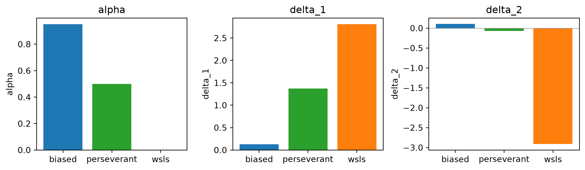
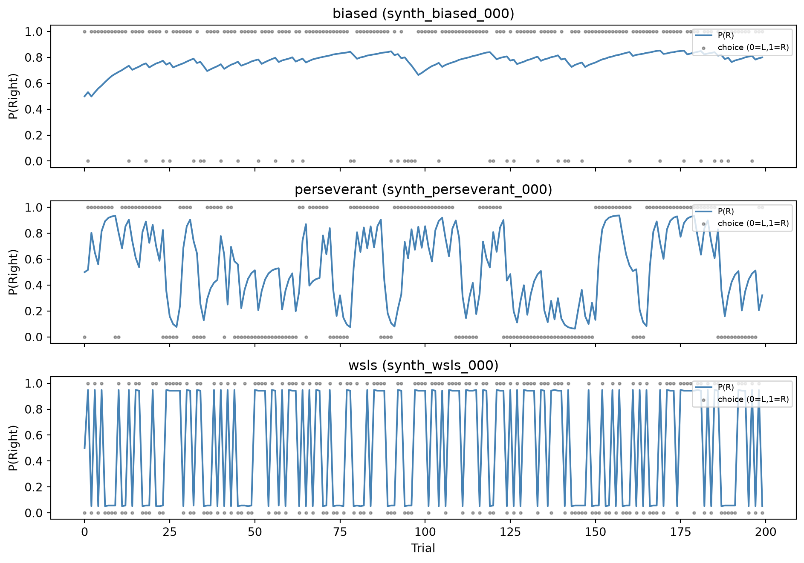
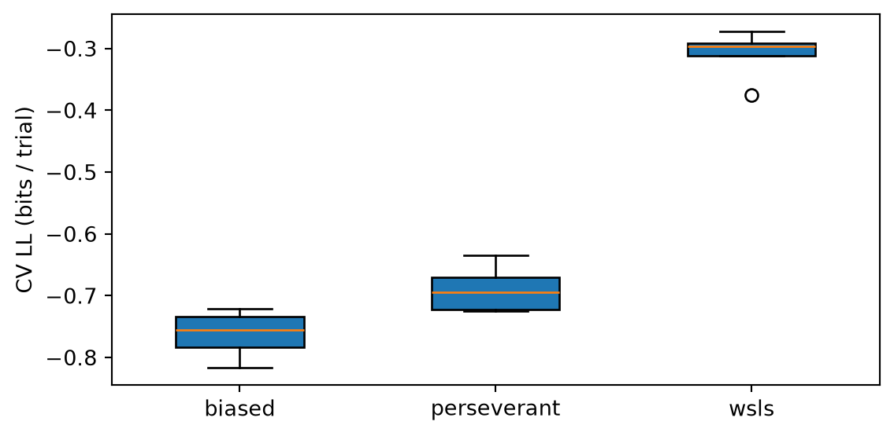

Code
import numpy as np
import pandas as pd
import matplotlib.pyplot as plt
import scipy.optimize as spoptWe fit a reinforcement-learning model from Lee et al. that maintains action values \(V_L\) and \(V_R\) and updates them trial by trial:
\[ V_c \leftarrow \alpha \, V_c + \delta \]
where \(\alpha \in (0,1)\) is a decay/memory parameter, \(\delta_1\) is the update after a reward, and \(\delta_2\) after no reward (applied to the chosen side only). Choice probability is softmax over the value difference:
\[ P(R) = \frac{1}{1 + \exp(-(V_R - V_L))} \]
The three free parameters \((\alpha, \delta_1, \delta_2)\) are fit by maximising the log-likelihood.
This mirrors lee_qlearning_model_nll_w_mask from matchingp.modeling.train.
def qlearning_nll(choices, rewards, alpha=0.5, delta_1=1.0, delta_2=-1.0,
sess_ids=None):
"""Negative log-likelihood of the Lee Q-learning model.
Parameters
----------
choices : array of int, 0=L 1=R
rewards : array of int, 0/1
alpha : decay rate
delta_1 : value update after reward
delta_2 : value update after no reward
sess_ids : optional array; resets values at session boundaries
Returns
-------
nll : float
logit_pR : array, log-odds P(R) per trial
"""
T = len(choices)
v_l, v_r = 0.0, 0.0
nll = 0.0
logit_pR = np.zeros(T)
for t in range(T):
if sess_ids is not None and t > 0 and sess_ids[t] != sess_ids[t - 1]:
v_l, v_r = 0.0, 0.0
logit_pR[t] = v_r - v_l
pR = 1.0 / (1.0 + np.exp(-logit_pR[t]))
nll -= np.log(pR) if choices[t] == 1 else np.log(1.0 - pR)
# value update
if choices[t] == 0:
delta_l = delta_1 if rewards[t] == 1 else delta_2
delta_r = 0
else:
delta_l = 0
delta_r = delta_1 if rewards[t] == 1 else delta_2
v_l = alpha * v_l + delta_l
v_r = alpha * v_r + delta_r
return nll, logit_pR
def fit_qlearning(choices, rewards, sess_ids=None):
"""Fit (alpha, delta_1, delta_2) by minimising NLL."""
def obj(theta):
a, d1, d2 = theta
nll, _ = qlearning_nll(choices, rewards, alpha=a, delta_1=d1,
delta_2=d2, sess_ids=sess_ids)
return nll
x0 = np.array([0.5, 1.0, -1.0])
bounds = [(1e-6, 1 - 1e-6), (None, None), (None, None)]
res = spopt.minimize(obj, x0, method="L-BFGS-B", bounds=bounds)
return resresults = {}
for strategy, sdf in df.groupby("strategy"):
choices = (sdf["choice"].values == "R").astype(int)
rewards = (sdf["reward"].values > 0).astype(int)
sess_ids = sdf["session_code"].values
res = fit_qlearning(choices, rewards, sess_ids=sess_ids)
alpha, d1, d2 = res.x
total_trials = len(choices)
ll_bits = -res.fun / (total_trials * np.log(2))
results[strategy] = {
"alpha": alpha, "delta_1": d1, "delta_2": d2,
"nll": res.fun, "ll_bits": ll_bits, "result": res,
}
print(f"{strategy:>12s}: α={alpha:.3f} δ₁={d1:+.3f} δ₂={d2:+.3f} "
f"LL={ll_bits:.4f} bits/trial") biased: α=0.951 δ₁=+0.127 δ₂=+0.105 LL=-0.7599 bits/trial
perseverant: α=0.500 δ₁=+1.373 δ₂=-0.072 LL=-0.6889 bits/trial
wsls: α=0.000 δ₁=+2.807 δ₂=-2.912 LL=-0.3076 bits/trial/tmp/ipykernel_1962789/3766179209.py:30: RuntimeWarning: divide by zero encountered in log
nll -= np.log(pR) if choices[t] == 1 else np.log(1.0 - pR)
/home/timsit/mp-behaviour-modeling/.venv/lib/python3.13/site-packages/scipy/optimize/_numdiff.py:686: RuntimeWarning: invalid value encountered in subtract
df = [f_eval - f0 for f_eval in f_evals]param_df = pd.DataFrame({
k: {"alpha": v["alpha"], "delta_1": v["delta_1"], "delta_2": v["delta_2"]}
for k, v in results.items()
}).T
fig, axes = plt.subplots(1, 3, figsize=(10, 3))
for ax, col in zip(axes, ["alpha", "delta_1", "delta_2"]):
ax.bar(param_df.index, param_df[col], color=["tab:blue", "tab:green", "tab:orange"])
ax.set_ylabel(col)
ax.set_title(col)
if col != "alpha":
ax.axhline(0, color="grey", lw=0.5)
plt.tight_layout()
plt.show()
fig, axes = plt.subplots(3, 1, figsize=(10, 7), sharex=True)
for ax, (strategy, sdf) in zip(axes, df.groupby("strategy")):
sess = sdf["session_code"].unique()[0]
sess_df = sdf.loc[sdf["session_code"] == sess]
choices = (sess_df["choice"].values == "R").astype(int)
rewards = (sess_df["reward"].values > 0).astype(int)
r = results[strategy]
_, logit_pR = qlearning_nll(choices, rewards, alpha=r["alpha"],
delta_1=r["delta_1"], delta_2=r["delta_2"])
pR = 1.0 / (1.0 + np.exp(-logit_pR))
trials = np.arange(len(pR))
ax.plot(trials, pR, color="steelblue", label="P(R)")
ax.scatter(trials, choices, s=5, alpha=0.3, color="black", label="choice (0=L,1=R)")
ax.set_ylabel("P(Right)")
ax.set_title(f"{strategy} ({sess})")
ax.set_ylim(-0.05, 1.05)
ax.legend(fontsize=7, loc="upper right")
axes[-1].set_xlabel("Trial")
plt.tight_layout()
plt.show()
We compare the Q-learning model’s predictive performance using 5-fold cross-validation (splitting by session).
from sklearn.model_selection import KFold
n_folds = 5
cv_results = {}
for strategy, sdf in df.groupby("strategy"):
sessions = sdf["session_code"].unique()
kf = KFold(n_splits=n_folds, shuffle=True, random_state=0)
fold_lls = []
for train_idx, test_idx in kf.split(sessions):
train_sess = sessions[train_idx]
test_sess = sessions[test_idx]
train_df = sdf.loc[sdf["session_code"].isin(train_sess)]
test_df = sdf.loc[sdf["session_code"].isin(test_sess)]
c_train = (train_df["choice"].values == "R").astype(int)
r_train = (train_df["reward"].values > 0).astype(int)
s_train = train_df["session_code"].values
res = fit_qlearning(c_train, r_train, sess_ids=s_train)
a, d1, d2 = res.x
c_test = (test_df["choice"].values == "R").astype(int)
r_test = (test_df["reward"].values > 0).astype(int)
s_test = test_df["session_code"].values
nll_test, _ = qlearning_nll(c_test, r_test, alpha=a, delta_1=d1,
delta_2=d2, sess_ids=s_test)
ll_bits = -nll_test / (len(c_test) * np.log(2))
fold_lls.append(ll_bits)
cv_results[strategy] = fold_lls
fig, ax = plt.subplots(figsize=(6, 3))
strategies = sorted(cv_results.keys())
positions = np.arange(len(strategies))
bp = ax.boxplot([cv_results[s] for s in strategies], positions=positions,
patch_artist=True, widths=0.5)
ax.set_xticks(positions)
ax.set_xticklabels(strategies)
ax.set_ylabel("CV LL (bits / trial)")
plt.tight_layout()
plt.show()/tmp/ipykernel_1962789/3766179209.py:30: RuntimeWarning: divide by zero encountered in log
nll -= np.log(pR) if choices[t] == 1 else np.log(1.0 - pR)
/home/timsit/mp-behaviour-modeling/.venv/lib/python3.13/site-packages/scipy/optimize/_numdiff.py:686: RuntimeWarning: invalid value encountered in subtract
df = [f_eval - f0 for f_eval in f_evals]
/tmp/ipykernel_1962789/3766179209.py:30: RuntimeWarning: divide by zero encountered in log
nll -= np.log(pR) if choices[t] == 1 else np.log(1.0 - pR)
/home/timsit/mp-behaviour-modeling/.venv/lib/python3.13/site-packages/scipy/optimize/_numdiff.py:686: RuntimeWarning: invalid value encountered in subtract
df = [f_eval - f0 for f_eval in f_evals]
/tmp/ipykernel_1962789/3766179209.py:30: RuntimeWarning: divide by zero encountered in log
nll -= np.log(pR) if choices[t] == 1 else np.log(1.0 - pR)
/home/timsit/mp-behaviour-modeling/.venv/lib/python3.13/site-packages/scipy/optimize/_numdiff.py:686: RuntimeWarning: invalid value encountered in subtract
df = [f_eval - f0 for f_eval in f_evals]
/tmp/ipykernel_1962789/3766179209.py:30: RuntimeWarning: divide by zero encountered in log
nll -= np.log(pR) if choices[t] == 1 else np.log(1.0 - pR)
/home/timsit/mp-behaviour-modeling/.venv/lib/python3.13/site-packages/scipy/optimize/_numdiff.py:686: RuntimeWarning: invalid value encountered in subtract
df = [f_eval - f0 for f_eval in f_evals]
/tmp/ipykernel_1962789/3766179209.py:30: RuntimeWarning: divide by zero encountered in log
nll -= np.log(pR) if choices[t] == 1 else np.log(1.0 - pR)
/home/timsit/mp-behaviour-modeling/.venv/lib/python3.13/site-packages/scipy/optimize/_numdiff.py:686: RuntimeWarning: invalid value encountered in subtract
df = [f_eval - f0 for f_eval in f_evals]